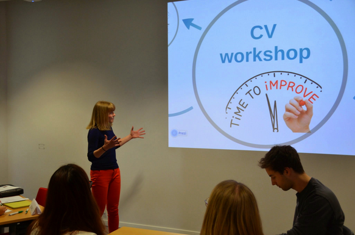
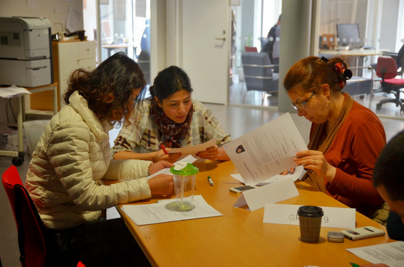
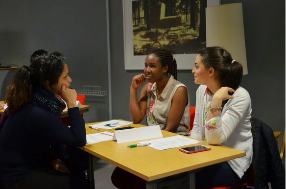

CV Workshop
I attended a CV workshop at Göteborg University that was hosted by the IT mentorship program. I was a bit skeptical about it, because I thought that my CV looked quite structured and the content was OK. I brought my general swedish CV with me that was for a broad kind of job opportunities.
The CV workshop was organized for the IT Faculty students on May 8. The main concept of the workshop was to bring together students from different programmes to provoke proactive CV evaluation and ideas exchange. The workshop involved CVs peer review in small groups and discussion of tasks prepared by Volvo IT and Jeppesen in relation to the CV analysis.
In a workshop there is no right or wrong things, the effectiveness of the workshop relies highly on the participants. Basically, the attendees give the input for the workshop and the facilitators give the structure to it. The students evaluated each others’ CV-s. First, I was with my friend, Panida and with another nice Swedish woman, Amanda. We had a certain amount of time to evaluate each others’ CV and give feedback.
This is the CV that I brought to the workshop: resume before
They told me that my CV had a structure, but need to be formatted better. I should put the titles, picture to the left, because when people start to look at a page, they start from the left side. Also I had some Swedish typos, of course….In addition, I should start with the job position and not with the date. Also, changing the font could help, there are readable fonts than times new roman. They really liked the short descriptions about the jobs, as it is easier to read and contains all the keywords that are necessary.
This section is from the original article, thought it is useful: "Another trick was mixing students from different study fields into small groups – different vision, different perspectives – all create a good platform for ideas exchange and kind of make one “think out of the box” of one’s study field. This is how new ideas come out! And yet another confirmation of the fact that it’s people who make the place – so, we believe that all workshop participants enjoyed communication and discussions with each other and managed to look at their CVs from “above the horizon”."
After the workshop we had to make the necessary changes on our CVs and they sent it to companies to give us feedback. I got really valuable feedback from Academic work. This is my CV after all the changes. resume after
As you can see I added a goal section that makes it easier for the HR person to know what am I looking for. Also, the reference section is really important in Sweden, which was new for me. As I am studying in IT, I should add a computer knowledge section and the languages are VERY important. From a well written CV the reader should know on which position the applicant is applying for.
Overall it was really useful and I will keep my eye open for these kinds of events.
The original article can be found here
Your email address will not be published. Required fields are marked *